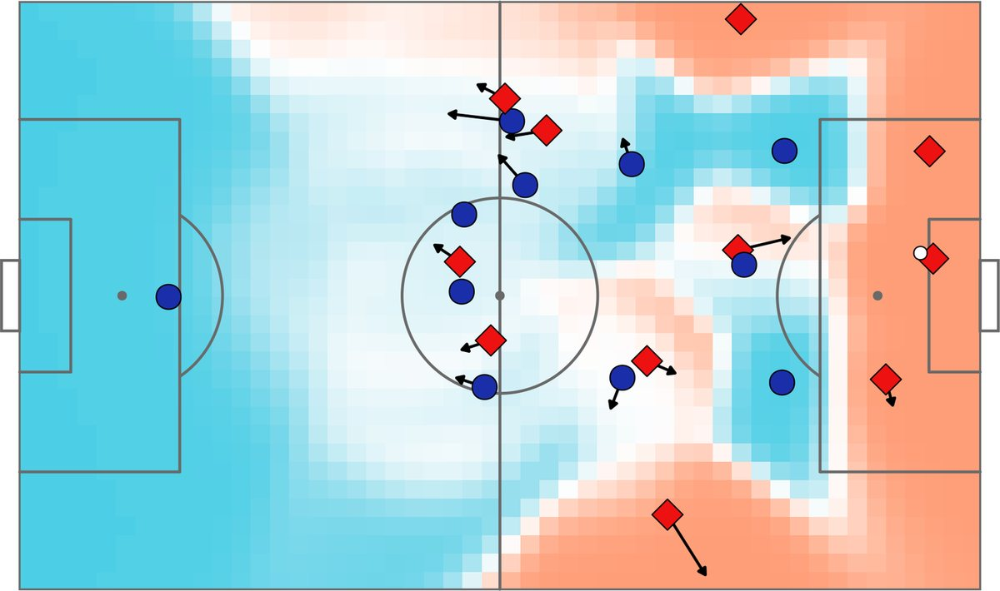

A model told to be generous will say generous things. Whether the same intervention changes the amount it hands over is a separate question, and the one I care about.
Persona vectors are extracted by contrasting personality descriptions and scoring how a model sounds, which makes the direction partly a rhetoric direction. I am building vectors from objective game-theoretic choices instead — cooperate or defect, what is actually transferred — and testing whether they steer behaviour where the trait vectors steer wording.
Reformatting a question can move a model's choice as much as steering it does. On a reproduced baseline, measuring steering strength in units of prompt formatting — and reading choices off the logits, so the measurement needs no sampling and no judge.

Scientific Reports 15(1) · 2025
A pitch-control model that gives every player their own top speed rather than assuming one for all, plus a stamina factor that scales it. The effect on pitch control turns out to be logarithmic, and accumulated control tracks top speed only within the limits of a player's role — defenders accumulate the most without being the fastest.